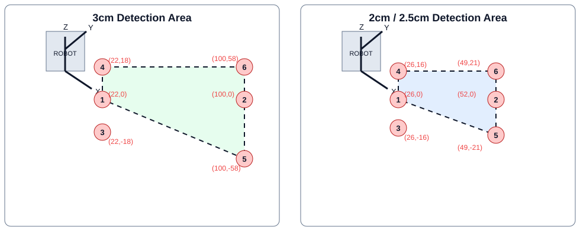

<script>
  var STATIC_MODULE_UI = window.STATIC_MODULE_UI || {};
  STATIC_MODULE_UI.basedepth = { key:'basedepth', title:'Base Depth Camera', method:'getBaseDepthData', renderer:'renderBaseDepthMasterDetail' };

  var activeBaseDepthRobotId = '';
  var activeBaseDepthObstacle = '3cm';
  var baseDepthShowReference = false;
  var baseDepthPasteObstacle = '3cm';
  var baseDepthCohortFilter = 'all';
  var baseDepthRobotFilter = '';
  var baseDepthSidebarCollapsed = false;
  var baseDepthFovFocusedRobotId = '';
  var baseDepthFovZoom = 1;
  var BASE_DEPTH_TOLERANCE_M = 0.05;
  var BASE_DEPTH_REFERENCE_COORDS = {
    '3cm': { 1:{x:22,y:0}, 2:{x:100,y:0}, 3:{x:22,y:-18}, 4:{x:22,y:18}, 5:{x:100,y:-58}, 6:{x:100,y:58} },
    '2.5cm': { 1:{x:26,y:0}, 2:{x:52,y:0}, 3:{x:26,y:16}, 4:{x:26,y:-16}, 5:{x:49,y:21}, 6:{x:49,y:-21} },
    '2cm': { 1:{x:26,y:0}, 2:{x:52,y:0}, 3:{x:26,y:16}, 4:{x:26,y:-16}, 5:{x:49,y:21}, 6:{x:49,y:-21} }
  };

  function findBaseDepthColumn(headers, patterns, fallback) {
    for (var column = 0; column < headers.length; column++) {
      var label = String(headers[column] || '').toLowerCase().replace(/[_-]+/g, ' ');
      if (patterns.some(function(pattern) { return pattern.test(label); })) return column;
    }
    return fallback !== undefined && fallback < headers.length ? fallback : -1;
  }

  function getBaseDepthColumns(response) {
    var headers = response.headers || [];
    var columns = {
      robot:0, sw:1, date:2, tester:3, obstacle:5, point:6, scriptDist:7,
      realDist:9, distanceStd:10, coordX:15, coordY:16, coord:-1, accuracy:10, delta:11, projector:12, status:12
    };
    var excluded = {};
    Object.keys(columns).forEach(function(key) { if (typeof columns[key] === 'number' && columns[key] >= 0) excluded[columns[key]] = true; });
    columns.reference = [];
    headers.forEach(function(_, index) { if (!excluded[index]) columns.reference.push(index); });
    return columns;
  }

  function baseDepthNumber(value) {
    var parsed = parseFloat(String(value === null || value === undefined ? '' : value).replace(',', '.').replace(/[^0-9+\-.]/g, ''));
    return isFinite(parsed) ? parsed : null;
  }

  function calculateBaseDepthResult(scriptDistance, realDistanceCm) {
    var script = baseDepthNumber(scriptDistance);
    var realCm = baseDepthNumber(realDistanceCm);
    if (script === null || realCm === null) return { delta:null, accuracy:null, status:'Pending' };
    var delta = (realCm / 100) - script;
    var accuracy = script === 0 ? null : Math.max(0, (1 - Math.abs(delta) / Math.abs(script)) * 100);
    return { delta:delta, accuracy:accuracy, status:Math.abs(delta) <= BASE_DEPTH_TOLERANCE_M + 1e-9 ? 'Pass' : 'Fail' };
  }

  function normalizeBaseDepthObstacle(value) {
    var text = String(value || '').toLowerCase().replace(/\s+/g, '');
    if (/2\.5cm|25mm/.test(text)) return '2.5cm';
    if (/3(?:\.0)?cm|30mm/.test(text)) return '3cm';
    if (/2(?:\.0)?cm|20mm/.test(text)) return '2cm';
    if (text === '2.5' || text.indexOf('2.5') !== -1) return '2.5cm';
    if (text === '3' || text.indexOf('3') !== -1) return '3cm';
    if (text === '2' || text.indexOf('2') !== -1) return '2cm';
    return '';
  }

  function getBaseDepthObstacleRows(group, columns) {
    var result = { '3cm':[], '2.5cm':[], '2cm':[] };
    var activeSize = '3cm';
    var hasExplicit25 = (group.rows || []).some(function(row) { return columns.obstacle >= 0 && normalizeBaseDepthObstacle(row[columns.obstacle]) === '2.5cm'; });
    (group.rows || []).forEach(function(row, index) {
      var explicitSize = columns.obstacle >= 0 ? normalizeBaseDepthObstacle(row[columns.obstacle]) : '';
      if (explicitSize) activeSize = explicitSize;
      else if (hasExplicit25) activeSize = index < 6 ? '3cm' : (index < 12 ? '2.5cm' : '2cm');
      else if (index === 6) activeSize = '2cm';
      var size = explicitSize || activeSize;
      if (result[size]) result[size].push({ row:row, groupIndex:index, sourceIndex:(group.sourceIndex || 0) + index });
    });
    return result;
  }

  function getBaseDepthRowStatus(row, columns) { return calculateBaseDepthResult(row[columns.scriptDist], row[columns.realDist]); }

  function getBaseDepthDisplayedStatus(row) {
    var value = String(row[12] || '').trim().toLowerCase();
    if (value === 'pass') return 'Pass';
    if (value === 'fail') return 'Fail';
    return 'Pending';
  }

  function getBaseDepthGroupState(group, columns) {
    var results = group.rows.map(function(row) { return getBaseDepthDisplayedStatus(row); }).filter(function(status) { return status !== 'Pending'; });
    if (!results.length) return { key:'pending', label:'Pending' };
    if (results.some(function(status) { return status === 'Fail'; })) return { key:'fail', label:'Review' };
    return { key:'pass', label:'Pass' };
  }

  function lastBaseDepthGroupValue(group, column) {
    if (column < 0) return '';
    for (var index = group.rows.length - 1; index >= 0; index--) {
      var value = String(group.rows[index][column] || '').trim();
      if (value) return value;
    }
    return '';
  }

  function selectBaseDepthRobot(robotId) { activeBaseDepthRobotId = robotId; if (rawModuleResponse) renderBaseDepthMasterDetail(rawModuleResponse, groupModuleRowsByRobot(rawModuleResponse)); }
  function setBaseDepthCohortFilter(filter) { baseDepthCohortFilter = filter || 'all'; if (rawModuleResponse) renderBaseDepthMasterDetail(rawModuleResponse, groupModuleRowsByRobot(rawModuleResponse)); }
  function setBaseDepthRobotFilter(value) { baseDepthRobotFilter = String(value || '').toLowerCase().trim(); if (rawModuleResponse) renderBaseDepthMasterDetail(rawModuleResponse, groupModuleRowsByRobot(rawModuleResponse)); }
  function selectBaseDepthObstacle(size) { activeBaseDepthObstacle = size === '2.5cm' || size === '2cm' ? size : '3cm'; if (rawModuleResponse) renderBaseDepthMasterDetail(rawModuleResponse, groupModuleRowsByRobot(rawModuleResponse)); }
  function toggleBaseDepthReferenceData(checked) { baseDepthShowReference = !!checked; if (rawModuleResponse) renderBaseDepthMasterDetail(rawModuleResponse, groupModuleRowsByRobot(rawModuleResponse)); }
  function toggleBaseDepthSidebar() { baseDepthSidebarCollapsed = !baseDepthSidebarCollapsed; if (rawModuleResponse) renderBaseDepthMasterDetail(rawModuleResponse, groupModuleRowsByRobot(rawModuleResponse)); }

  function ensureBaseDepthFovModal() {
    var modal = document.getElementById('baseDepthFovModal');
    if (modal) return modal;
    modal = document.createElement('div');
    modal.id = 'baseDepthFovModal';
    modal.className = 'modal-overlay base-depth-fov-overlay';
    modal.onclick = function(event) { if (event.target === modal) modal.style.display = 'none'; };
    document.body.appendChild(modal);
    return modal;
  }

  function openBaseDepthFovModal() {
    if (!rawModuleResponse) return;
    var modal = ensureBaseDepthFovModal();
    var groups = groupModuleRowsByRobot(rawModuleResponse) || [];
    var obstacles = ['3cm','2.5cm','2cm'].map(function(size) { return '<label class="fov-check"><input type="checkbox" class="fov-obstacle" value="' + size + '" checked onchange="renderFovChart()"> ' + size + '</label>'; }).join('');
    baseDepthFovFocusedRobotId = activeBaseDepthRobotId || '';
    baseDepthFovZoom = 1;
    modal.innerHTML = '<div class="modal-box base-depth-fov-modal" role="dialog" aria-modal="true" aria-labelledby="baseDepthFovTitle"><div class="base-depth-fov-header"><h3 id="baseDepthFovTitle">Base Depth Camera FOV (Top View)</h3><button type="button" onclick="document.getElementById(\'baseDepthFovModal\').style.display=\'none\'" aria-label="Close">×</button></div><div class="fov-controls"><span class="fov-series-label">Obstacle</span>' + obstacles + '<label class="fov-field fov-series-picker">Robot series<select id="fovSeriesSelect" onchange="renderFovChart()"><option value="DVT1">DVT1 robots</option><option value="DVT2">DVT2 robots</option><option value="OTHER">Other robots</option><option value="ALL">All series</option></select></label></div><div id="fovPlots" class="fov-plots"></div></div>';
    modal.style.display = 'flex';
    renderFovChart();
  }

  function getBaseDepthFovPoint(row, size, pointNumber) {
    var status = getBaseDepthDisplayedStatus(row).toUpperCase();
    var measuredX = baseDepthNumber(row[15]);
    var measuredY = baseDepthNumber(row[16]);
    if (status === 'FAIL' && measuredX !== null && measuredY !== null) return { x:measuredX, y:measuredY, source:'measured' };
    var ref = (BASE_DEPTH_REFERENCE_COORDS[size] || BASE_DEPTH_REFERENCE_COORDS['2cm'])[pointNumber] || {x:30,y:0};
    return { x:ref.x, y:ref.y, source:'reference' };
  }

  function baseDepthFovPoints(rows, size) {
    var points = {};
    (rows || []).forEach(function(row) {
      if (normalizeBaseDepthObstacle(row[5]) !== size) return;
      var pointNumber = parseInt(row[6], 10);
      if (pointNumber >= 1 && pointNumber <= 6) points[pointNumber] = getBaseDepthFovPoint(row, size, pointNumber);
    });
    return points;
  }

  function renderFovChart() {
    var plotContainer = document.getElementById('fovPlots');
    if (!plotContainer || !rawModuleResponse) return;
    var modalBox = plotContainer.closest('.base-depth-fov-modal');
    if (modalBox) modalBox.classList.toggle('fov-single-mode', !!baseDepthFovFocusedRobotId);
    var groups = groupModuleRowsByRobot(rawModuleResponse) || [];
    var selectedObstacles = Array.prototype.slice.call(document.querySelectorAll('.fov-obstacle:checked')).map(function(input) { return input.value; });
    if (!selectedObstacles.length) selectedObstacles = [activeBaseDepthObstacle];
    var selectedSeries = (document.getElementById('fovSeriesSelect') || {}).value || 'DVT1';
    var selectedGroups = groups.filter(function(item) { var name = String(item.id || '').toUpperCase(); var cohort = name.indexOf('DVT1') !== -1 ? 'DVT1' : (name.indexOf('DVT2') !== -1 ? 'DVT2' : 'OTHER'); return selectedSeries === 'ALL' || cohort === selectedSeries; }).slice(0, 5);
    if (!selectedGroups.length) selectedGroups = groups.slice(0, 5);
    if (baseDepthFovFocusedRobotId) {
      var focused = groups.filter(function(item) { return item.id === baseDepthFovFocusedRobotId; })[0];
      if (focused) selectedGroups = [focused];
    }
    var showAllButton = '<div class="fov-tools">' + (baseDepthFovFocusedRobotId ? '<button type="button" class="fov-view-all" id="fovShowAll">Show all robots</button>' : '') + '<span class="fov-tool-label">Zoom</span><button type="button" class="fov-tool-button" id="fovZoomOut" aria-label="Zoom out">−</button><button type="button" class="fov-tool-button" id="fovZoomReset" aria-label="Reset zoom">Reset</button><button type="button" class="fov-tool-button" id="fovZoomIn" aria-label="Zoom in">+</button><span class="fov-zoom-hint">Use the mouse wheel over a plot</span></div>';
    plotContainer.innerHTML = showAllButton + selectedGroups.map(function(group, index) { return '<section class="fov-plot-card ' + (baseDepthFovFocusedRobotId ? 'focused' : '') + '" role="button" tabindex="0" data-robot-id="' + escapeHtml(group.id) + '" title="Click to focus this robot"><h4><span class="fov-plot-index">' + (index + 1) + '</span>' + escapeHtml(group.id) + '<span class="fov-card-action">Open plot</span></h4><div class="fov-plot-legend"><span><i class="legend-dot obstacle-3cm"></i>3 cm</span><span><i class="legend-dot obstacle-25cm"></i>2.5 cm</span><span><i class="legend-dot obstacle-2cm"></i>2 cm</span></div><canvas class="fov-plot-canvas" width="760" height="500" data-robot-id="' + escapeHtml(group.id) + '"></canvas></section>'; }).join('');
    Array.prototype.slice.call(plotContainer.querySelectorAll('.fov-plot-card')).forEach(function(card) {
      var robotId = card.getAttribute('data-robot-id');
      card.addEventListener('click', function() { focusBaseDepthFovRobot(robotId); });
      card.addEventListener('keydown', function(event) { if (event.key === 'Enter' || event.key === ' ') { event.preventDefault(); focusBaseDepthFovRobot(robotId); } });
    });
    Array.prototype.slice.call(plotContainer.querySelectorAll('.fov-plot-canvas')).forEach(function(canvas) {
      canvas.addEventListener('mousemove', function(event) {
        var rect = canvas.getBoundingClientRect();
        var x = (event.clientX - rect.left) * (canvas.clientWidth / rect.width);
        var y = (event.clientY - rect.top) * (canvas.clientHeight / rect.height);
        var hit = (canvas._fovHits || []).reduce(function(closest, item) {
          var distance = Math.hypot(item.px - x, item.py - y);
          return distance <= 20 && (!closest || distance < closest.distance) ? { item:item, distance:distance } : closest;
        }, null);
        var tooltip = ensureBaseDepthFovPointTooltip();
        if (!hit) { tooltip.style.display = 'none'; return; }
        tooltip.innerHTML = '<strong>Point ' + hit.item.point + '</strong><span>' + hit.item.size + '</span><span>Coord: (' + hit.item.x.toFixed(2) + ', ' + hit.item.y.toFixed(2) + ') cm</span><small>' + (hit.item.source === 'measured' ? 'Measured failure coordinate' : 'Reference coordinate') + '</small>';
        tooltip.style.left = Math.min(event.clientX + 14, window.innerWidth - 245) + 'px';
        tooltip.style.top = Math.max(8, event.clientY - 70) + 'px';
        tooltip.style.display = 'flex';
      });
      canvas.addEventListener('click', function(event) {
        canvas.dispatchEvent(new MouseEvent('mousemove', { clientX:event.clientX, clientY:event.clientY, bubbles:false }));
      });
      canvas.addEventListener('mouseleave', function() { var tooltip = document.getElementById('baseDepthFovPointTooltip'); if (tooltip) tooltip.style.display = 'none'; });
      canvas.addEventListener('wheel', function(event) {
        event.preventDefault();
        baseDepthFovZoom = Math.max(.5, Math.min(3, baseDepthFovZoom + (event.deltaY < 0 ? .25 : -.25)));
        renderFovChart();
      }, { passive:false });
    });
    var showAll = document.getElementById('fovShowAll');
    if (showAll) showAll.onclick = function() { baseDepthFovFocusedRobotId = ''; baseDepthFovZoom = 1; renderFovChart(); };
    var zoomIn = document.getElementById('fovZoomIn');
    var zoomOut = document.getElementById('fovZoomOut');
    var zoomReset = document.getElementById('fovZoomReset');
    if (zoomIn) zoomIn.onclick = function() { baseDepthFovZoom = Math.min(3, baseDepthFovZoom + .25); renderFovChart(); };
    if (zoomOut) zoomOut.onclick = function() { baseDepthFovZoom = Math.max(.5, baseDepthFovZoom - .25); renderFovChart(); };
    if (zoomReset) zoomReset.onclick = function() { baseDepthFovZoom = 1; renderFovChart(); };
    var exportButton = document.getElementById('fovExportButton');
    if (exportButton) exportButton.onclick = exportBaseDepthFovPlots;
    var referenceButton = document.getElementById('fovReferenceButton');
    if (referenceButton) referenceButton.onclick = openBaseDepthReferenceDiagram;
    selectedGroups.forEach(function(group) { drawBaseDepthFovPlot(group, selectedObstacles); });
  }

  function focusBaseDepthFovRobot(robotId) {
    baseDepthFovFocusedRobotId = robotId || '';
    activeBaseDepthRobotId = baseDepthFovFocusedRobotId;
    renderFovChart();
  }

  function exportBaseDepthFovPlots() {
    var canvases = Array.prototype.slice.call(document.querySelectorAll('.fov-plot-canvas'));
    if (!canvases.length) return;
    canvases.forEach(function(canvas, index) {
      var robotId = canvas.getAttribute('data-robot-id') || ('robot-' + (index + 1));
      var link = document.createElement('a');
      link.download = 'base-depth-fov-' + robotId.replace(/[^a-z0-9_-]+/gi, '_') + '.png';
      link.href = canvas.toDataURL('image/png');
      link.click();
    });
  }

  function exportBaseDepthFovFromMain() {
    openBaseDepthFovModal();
    setTimeout(exportBaseDepthFovPlots, 80);
  }

  function openBaseDepthReferenceDiagram() {
    var preview = document.getElementById('baseDepthReferencePreview') || document.createElement('div');
    preview.id = 'baseDepthReferencePreview';
    preview.className = 'base-depth-reference-preview';
    preview.innerHTML = '<div class="base-depth-reference-box" role="dialog" aria-modal="true" aria-label="Base Depth reference diagram"><div class="base-depth-reference-header"><strong>Base Depth reference geometry</strong><button type="button" aria-label="Close reference diagram">×</button></div><div class="base-depth-reference-stage"></div></div>';
    preview.onclick = function(event) { if (event.target === preview || event.target.tagName === 'BUTTON') preview.style.display = 'none'; };
    if (!preview.parentNode) document.body.appendChild(preview);
    preview.style.display = 'flex';
  }

  function ensureBaseDepthFovPointTooltip() {
    var tooltip = document.getElementById('baseDepthFovPointTooltip');
    if (tooltip) return tooltip;
    tooltip = document.createElement('div');
    tooltip.id = 'baseDepthFovPointTooltip';
    tooltip.className = 'fov-point-tooltip';
    document.body.appendChild(tooltip);
    return tooltip;
  }

  function drawBaseDepthFovPlot(group, selectedObstacles) {
    var canvas = Array.prototype.slice.call(document.querySelectorAll('.fov-plot-canvas')).filter(function(item) { return item.getAttribute('data-robot-id') === group.id; })[0];
    if (!canvas) return;
    var cssWidth = canvas.clientWidth || 760;
    var naturalHeight = Math.round(cssWidth * 500 / 760);
    var cssHeight = baseDepthFovFocusedRobotId ? Math.min(naturalHeight, Math.max(320, window.innerHeight - 300)) : naturalHeight;
    var pixelRatio = Math.min(window.devicePixelRatio || 1, 3);
    canvas.width = Math.round(cssWidth * pixelRatio);
    canvas.height = Math.round(cssHeight * pixelRatio);
    canvas.style.height = cssHeight + 'px';
    var ctx = canvas.getContext('2d');
    ctx.setTransform(pixelRatio, 0, 0, pixelRatio, 0, 0);
    var width = cssWidth, height = cssHeight;
    ctx.clearRect(0, 0, width, height);
    ctx.fillStyle = '#f8fafc'; ctx.fillRect(0, 0, width, height);
    var all = [];
    selectedObstacles.forEach(function(size) { var points = baseDepthFovPoints(group.rows, size); Object.keys(points).forEach(function(key) { all.push(points[key]); }); });
    if (!all.length) { ctx.fillStyle = '#64748b'; ctx.font = '14px Inter, sans-serif'; ctx.textAlign = 'center'; ctx.fillText('No coordinate data available', width / 2, height / 2); return; }
    var minX = Math.min(-40, Math.min.apply(null, all.map(function(point) { return point.x; })) - 10);
    var maxX = Math.max(110, Math.max.apply(null, all.map(function(point) { return point.x; })) + 10);
    var minY = Math.min(-70, Math.min.apply(null, all.map(function(point) { return point.y; })) - 10);
    var maxY = Math.max(70, Math.max.apply(null, all.map(function(point) { return point.y; })) + 10);
    var centerX = (minX + maxX) / 2, centerY = (minY + maxY) / 2;
    var xHalf = (maxX - minX) / (2 * baseDepthFovZoom), yHalf = (maxY - minY) / (2 * baseDepthFovZoom);
    minX = centerX - xHalf; maxX = centerX + xHalf; minY = centerY - yHalf; maxY = centerY + yHalf;
    var pad = { left:52, right:20, top:28, bottom:42 };
    var sx = function(x) { return pad.left + (x - minX) / (maxX - minX) * (width - pad.left - pad.right); };
    var sy = function(y) { return height - pad.bottom - (y - minY) / (maxY - minY) * (height - pad.top - pad.bottom); };
    canvas._fovHits = [];
    ctx.strokeStyle = '#e2e8f0'; ctx.lineWidth = 1; ctx.font = '10px Inter, sans-serif'; ctx.fillStyle = '#64748b'; ctx.textAlign = 'center';
    for (var gx = Math.ceil(minX / 20) * 20; gx <= maxX; gx += 20) { ctx.beginPath(); ctx.moveTo(sx(gx), pad.top); ctx.lineTo(sx(gx), height - pad.bottom); ctx.stroke(); ctx.fillText(gx, sx(gx), height - 16); }
    ctx.textAlign = 'right';
    for (var gy = Math.ceil(minY / 20) * 20; gy <= maxY; gy += 20) { ctx.beginPath(); ctx.moveTo(pad.left, sy(gy)); ctx.lineTo(width - pad.right, sy(gy)); ctx.stroke(); ctx.fillText(gy, pad.left - 8, sy(gy) + 3); }
    ctx.fillStyle = '#334155'; ctx.textAlign = 'center'; ctx.font = '11px Inter, sans-serif'; ctx.fillText('x front (cm)', (pad.left + width - pad.right) / 2, height - 3);
    ctx.save(); ctx.translate(14, (pad.top + height - pad.bottom) / 2); ctx.rotate(-Math.PI / 2); ctx.fillText('y left (cm)', 0, 0); ctx.restore();
    ctx.strokeStyle = '#64748b'; ctx.lineWidth = 1.5; ctx.strokeRect(sx(-35), sy(18), sx(-5) - sx(-35), sy(-18) - sy(18)); ctx.fillStyle = '#64748b'; ctx.textAlign = 'center'; ctx.fillText('Robot', sx(-20), sy(-24));
    ctx.fillStyle = '#475569'; ctx.beginPath(); ctx.arc(sx(0), sy(0), 3, 0, Math.PI * 2); ctx.fill(); ctx.textAlign = 'left'; ctx.font = '10px Inter, sans-serif'; ctx.fillText('(0,0)', sx(0) + 6, sy(0) - 6);
    var seriesColors = ['#2563eb','#9333ea','#16a34a','#f97316','#e11d48'];
    [group].forEach(function(group, seriesIndex) {
      selectedObstacles.forEach(function(size, obstacleIndex) {
        var pointMap = baseDepthFovPoints(group.rows, size); var points = Object.keys(pointMap).map(function(key) { var point = pointMap[key]; point._pointNumber = key; return point; }).filter(Boolean); if (points.length < 3) return;
        var centerX = points.reduce(function(sum, point) { return sum + point.x; }, 0) / points.length;
        var centerY = points.reduce(function(sum, point) { return sum + point.y; }, 0) / points.length;
        points.sort(function(a, b) { return Math.atan2(a.y - centerY, a.x - centerX) - Math.atan2(b.y - centerY, b.x - centerX); });
        var obstacleColors = { '3cm':'#2563eb', '2.5cm':'#9333ea', '2cm':'#16a34a' };
        var color = obstacleColors[size] || seriesColors[seriesIndex];
        ctx.beginPath(); ctx.moveTo(sx(points[0].x), sy(points[0].y)); points.slice(1).forEach(function(point) { ctx.lineTo(sx(point.x), sy(point.y)); }); ctx.closePath();
        ctx.fillStyle = color + (obstacleIndex ? '08' : '18'); ctx.fill(); ctx.strokeStyle = color; ctx.setLineDash(obstacleIndex ? [5,3] : []); ctx.lineWidth = 2; ctx.stroke(); ctx.setLineDash([]);
        points.forEach(function(point) { var plotX = sx(point.x), plotY = sy(point.y); canvas._fovHits.push({ px:plotX, py:plotY, point:point._pointNumber, x:point.x, y:point.y, size:size, source:point.source }); ctx.beginPath(); ctx.arc(plotX, plotY, 5, 0, Math.PI * 2); ctx.fillStyle = color; ctx.fill(); ctx.fillStyle = '#0f172a'; ctx.font = '700 11px Inter, sans-serif'; ctx.textAlign = 'left'; ctx.fillText(String(point._pointNumber), plotX + 8, plotY - 8); });
      });
    });
    var legendX = pad.left + 8, legendY = pad.top + 12; ctx.textAlign = 'left'; ctx.font = '11px Inter, sans-serif';
    ctx.fillStyle = '#334155'; ctx.fillText(group.id, legendX + 12, legendY);
  }

  function renderBaseDepthMasterDetail(response, groups) {
    document.body.classList.add('base-depth-viewport');
    var container = document.getElementById('tableContainer');
    var columns = getBaseDepthColumns(response);
    var visibleGroups = (groups || groupModuleRowsByRobot(response)).filter(function(group) {
      var cohortMatch = baseDepthCohortFilter === 'all' || String(group.id || '').toUpperCase().indexOf(baseDepthCohortFilter.toUpperCase()) !== -1;
      var textMatch = !baseDepthRobotFilter || String(group.id || '').toLowerCase().indexOf(baseDepthRobotFilter) !== -1;
      var globalMatch = !searchQuery || group.rows.some(function(row) { return row.join(' ').toLowerCase().indexOf(searchQuery) !== -1; });
      return cohortMatch && textMatch && globalMatch;
    });
    if (!visibleGroups.length) { container.innerHTML = '<div class="panel-card smart-empty compact"><h3>No matching robot</h3><p>Try another Robot ID, tester, date, or measurement.</p></div>'; return; }
    var activeGroup = visibleGroups.filter(function(group) { return group.id === activeBaseDepthRobotId; })[0] || visibleGroups[0];
    activeBaseDepthRobotId = activeGroup.id;
    var obstacleRows = getBaseDepthObstacleRows(activeGroup, columns);
    var selectedRows = obstacleRows[activeBaseDepthObstacle] || [];
    var date = lastBaseDepthGroupValue(activeGroup, columns.date) || 'Not recorded';
    var tester = lastBaseDepthGroupValue(activeGroup, columns.tester) || 'Unassigned';
    var sw = lastBaseDepthGroupValue(activeGroup, columns.sw) || 'Not recorded';
    var html = '<section class="base-depth-master-detail"><aside class="base-depth-master table-card"><header class="bd-robot-list-header"><div><span>ROBOTS</span><strong>' + visibleGroups.length + ' units</strong></div><input class="bd-robot-search" type="search" placeholder="Search robot…" value="' + escapeHtml(baseDepthRobotFilter) + '" oninput="setBaseDepthRobotFilter(this.value)" aria-label="Search Base Depth robots"></header><div class="bd-cohort-filters"><button type="button" class="' + (baseDepthCohortFilter === 'all' ? 'active' : '') + '" onclick="setBaseDepthCohortFilter(\'all\')">All</button><button type="button" class="' + (baseDepthCohortFilter === 'DVT1' ? 'active' : '') + '" onclick="setBaseDepthCohortFilter(\'DVT1\')">DVT1</button><button type="button" class="' + (baseDepthCohortFilter === 'DVT2' ? 'active' : '') + '" onclick="setBaseDepthCohortFilter(\'DVT2\')">DVT2</button></div><div class="base-depth-master-list">';
    visibleGroups.forEach(function(group) {
      var state = getBaseDepthGroupState(group, columns);
      var obstacleRows = getBaseDepthObstacleRows(group, columns);
      var cohort = String(group.id || '').toUpperCase().indexOf('DVT2') !== -1 ? 'DVT2' : (String(group.id || '').toUpperCase().indexOf('DVT1') !== -1 ? 'DVT1' : 'OTHER');
      var cohortClass = cohort.toLowerCase();
      var dotStatus = function(size) { var rows = obstacleRows[size] || []; if (!rows.length) return 'empty'; return rows.some(function(item) { return getBaseDepthDisplayedStatus(item.row) === 'Fail'; }) ? 'fail' : (rows.every(function(item) { return getBaseDepthDisplayedStatus(item.row) === 'Pass'; }) ? 'pass' : 'pending'); };
      html += '<button type="button" class="bd-robot-item ' + (group.id === activeGroup.id ? 'active ' : '') + 'state-' + state.key + '" data-robot-id="' + escapeHtml(group.id) + '" onclick="selectBaseDepthRobot(this.dataset.robotId)"><div class="bd-item-main"><div class="bd-item-title-row"><span class="bd-cohort-pill ' + cohortClass + '">' + cohort + '</span><strong class="bd-robot-name">' + escapeHtml(group.id) + '</strong></div><div class="bd-item-sub"><span>' + group.rows.length + ' runs</span><div class="bd-obstacle-dots" title="Status across 3cm / 2.5cm / 2cm"><i class="dot ' + dotStatus('3cm') + '"></i><i class="dot ' + dotStatus('2.5cm') + '"></i><i class="dot ' + dotStatus('2cm') + '"></i></div></div></div><span class="bd-overall-badge ' + state.key + '">' + state.label + '</span></button>';
    });
    html += '</div></aside><section class="base-depth-detail table-card base-depth-card"><header class="panel-header base-depth-hero module-unified-hero"><div class="hero-left"><div class="eyebrow">DATA EXPLORER</div><h1 class="module-panel-title hero-title">Base Depth Camera</h1><p class="module-purpose hero-purpose"><strong>PURPOSE</strong><span>To evaluate obstacle detection capability and distance measurement precision of the lower depth sensor across standard hurdle heights (3cm, 2.5cm, 2cm).</span></p></div><div class="base-depth-meta-pills hero-actions"><span class="meta-chip"><strong>Robot:</strong> <span id="bd_active_robot">' + escapeHtml(activeGroup.id) + '</span></span><span class="meta-chip"><strong>Projector:</strong> <span class="badge-pass">PASS</span></span><button type="button" class="btn-ctrl primary base-depth-fov-button" onclick="openBaseDepthFovModal()"><span aria-hidden="true">⌁</span> View FOV Plot</button><button type="button" class="btn-ctrl base-depth-export-button" onclick="exportBaseDepthFovFromMain()">Export FOV</button></div></header><header class="base-depth-detail-header"><div><span>ROBOT ID</span><h2>' + escapeHtml(activeGroup.id) + '</h2></div><dl><div><dt>Date</dt><dd>' + escapeHtml(date) + '</dd></div><div><dt>Tester</dt><dd>' + escapeHtml(tester) + '</dd></div><div><dt>SW Version</dt><dd>' + escapeHtml(sw) + '</dd></div></dl></header>';
    html += '<div class="base-depth-detail-toolbar"><div class="base-depth-size-tabs" role="tablist"><button type="button" class="' + (activeBaseDepthObstacle === '3cm' ? 'active' : '') + '" onclick="selectBaseDepthObstacle(\'3cm\')">3cm <span>' + obstacleRows['3cm'].length + '</span></button><button type="button" class="' + (activeBaseDepthObstacle === '2.5cm' ? 'active' : '') + '" onclick="selectBaseDepthObstacle(\'2.5cm\')">2.5cm <span>' + obstacleRows['2.5cm'].length + '</span></button><button type="button" class="' + (activeBaseDepthObstacle === '2cm' ? 'active' : '') + '" onclick="selectBaseDepthObstacle(\'2cm\')">2cm <span>' + obstacleRows['2cm'].length + '</span></button></div><label class="base-depth-reference-toggle"><input type="checkbox" ' + (baseDepthShowReference ? 'checked ' : '') + 'onchange="toggleBaseDepthReferenceData(this.checked)"><span></span>Toggle Reference Data</label></div>';
    html += renderBaseDepthCleanGrid(selectedRows, response, columns) + '</section></section>';
    html = html.replace('<section class="base-depth-master-detail">', '<section class="base-depth-master-detail ' + (baseDepthSidebarCollapsed ? 'bd-sidebar-collapsed' : '') + '">');
    html = html.replace('class="bd-robot-list-header"', 'class="bd-robot-list-header robot-sidebar-header"');
    html = html.replace('<header class="bd-robot-list-header robot-sidebar-header"><div><span>ROBOTS</span><strong>', '<header class="bd-robot-list-header robot-sidebar-header"><div class="bd-header-top"><div class="bd-title-group"><span>ROBOTS</span><strong>');
    html = html.replace('</strong></div><input class="bd-robot-search"', '</strong></div></div><div class="bd-search-wrap"><input class="bd-robot-search"');
    html = html.replace('aria-label="Search Base Depth robots"></header>', 'aria-label="Search Base Depth robots"></div></header>');
    html = html.replace('class="base-depth-detail-header"', 'class="base-depth-detail-header meta-strip"');
    html = html.replace('class="base-depth-detail-toolbar"', 'class="base-depth-detail-toolbar toolbar-row"');
    html = html.replace('class="base-depth-size-tabs"', 'class="base-depth-size-tabs obstacle-tabs"');
    html = html.replace('<aside class="base-depth-master table-card">', '<aside class="base-depth-master table-card" id="bdRobotSidebar"><button type="button" class="sidebar-drawer-toggle" id="bdSidebarToggleBtn" onclick="toggleBaseDepthSidebar()" title="Toggle Robot Panel" aria-label="Toggle Robot Panel"><svg class="toggle-icon" width="14" height="14" viewBox="0 0 24 24" fill="none" stroke="currentColor" stroke-width="2.5" stroke-linecap="round" stroke-linejoin="round"><polyline points="15 18 9 12 15 6"></polyline></svg></button><div class="sidebar-inner-content">');
    html = html.replace('</div></aside><section class="base-depth-detail', '</div></div></aside><section class="base-depth-detail');
    var heroStart = html.indexOf('<header class="panel-header base-depth-hero module-unified-hero">');
    var heroBoundary = heroStart >= 0 ? html.indexOf('</header><header class="base-depth-detail-header meta-strip">', heroStart) : -1;
    var heroEnd = heroBoundary >= 0 ? heroBoundary + '</header>'.length : -1;
    if (heroStart >= 0 && heroEnd > heroStart) {
      var heroMarkup = html.substring(heroStart, heroEnd);
      html = html.substring(0, heroStart) + html.substring(heroEnd);
      html = html.replace('<section class="base-depth-master-detail ' + (baseDepthSidebarCollapsed ? 'bd-sidebar-collapsed' : '') + '">', '<div class="base-depth-module-container">' + heroMarkup + '<div class="base-depth-split-workspace ' + (baseDepthSidebarCollapsed ? 'bd-sidebar-collapsed' : '') + '"><button type="button" class="bd-sidebar-restore" onclick="toggleBaseDepthSidebar()" aria-label="Show robot list">›</button>');
      html = html.replace('<section class="base-depth-detail table-card base-depth-card">', '<div class="base-depth-content-grid"><section class="base-depth-detail table-card base-depth-card">');
      html = html.replace('</section></div></div>', '</section><aside class="base-depth-info-rail table-card"><div class="bd-rail-kicker">ACTIVE ROBOT</div><h3>' + escapeHtml(activeGroup.id) + '</h3><div class="bd-rail-meta"><div><span>Tester</span><strong>' + escapeHtml(tester) + '</strong></div><div><span>SW Version</span><strong>' + escapeHtml(sw) + '</strong></div><div><span>Date</span><strong>' + escapeHtml(date) + '</strong></div></div><div class="bd-rail-fov"><div><strong>FOV Plot</strong><button type="button" class="btn-ctrl primary" onclick="openBaseDepthFovModal()">View</button></div><canvas id="baseDepthMiniFov" width="280" height="180"></canvas></div></aside></div></div></div>');
    }
    container.innerHTML = html;
    setSyncState('Synced ' + response.updatedAt, 'ready');
  }

  function renderBaseDepthCleanGrid(items, response, columns) {
    var headers = response.headers || [];
    var html = '<div class="base-depth-clean-grid bd-table-scroller"><table><thead><tr><th>Test Point #</th><th>Script Dist (m)</th>' + (baseDepthShowReference ? '<th>Real Dist (cm)</th>' : '') + '<th>Distance STD</th><th>Coord (X, Y)</th><th>Status</th><th>Action</th>';
    if (baseDepthShowReference) { html += '<th>Accuracy</th><th>Delta</th>'; columns.reference.forEach(function(column) { html += '<th>' + escapeHtml(headers[column] || ('Column ' + (column + 1))) + '</th>'; }); }
    html += '</tr></thead><tbody>';
    if (!items.length) html += '<tr><td colspan="' + (baseDepthShowReference ? 7 + columns.reference.length : 6) + '" class="base-depth-empty">No ' + activeBaseDepthObstacle + ' measurements recorded.</td></tr>';
    items.forEach(function(item, index) {
      var row = item.row;
      var calculated = getBaseDepthRowStatus(row, columns);
      var displayedStatus = getBaseDepthDisplayedStatus(row);
      var point = columns.point >= 0 ? row[columns.point] : '';
      var x = columns.coordX >= 0 ? row[columns.coordX] : '';
      var y = columns.coordY >= 0 ? row[columns.coordY] : '';
      var combined = columns.coord >= 0 ? row[columns.coord] : '';
      var coordinate = combined || ((x || y) ? '(' + (x || '—') + ', ' + (y || '—') + ')' : '—');
      html += '<tr><td class="col-point">' + escapeHtml(point || String(index + 1)) + '</td><td class="col-script-dist"><code>' + escapeHtml(row[columns.scriptDist] || '—') + '</code></td>' + (baseDepthShowReference ? '<td class="col-real-dist"><code>' + escapeHtml(row[columns.realDist] || '—') + '</code></td>' : '') + '<td class="col-distance-std"><code>' + escapeHtml(row[columns.distanceStd] || '—') + '</code></td><td class="base-depth-coordinate col-coord">' + escapeHtml(coordinate) + '</td><td><span class="status-badge-smart ' + displayedStatus.toLowerCase() + '">' + displayedStatus + '</span></td><td><button type="button" class="base-depth-edit-button" onclick="editBaseDepthRow(event,' + ((response.headerRow || 1) + 1 + (item.sourceIndex || 0)) + ')">Edit</button></td>';
      if (baseDepthShowReference) { html += '<td>' + (calculated.accuracy === null ? '—' : calculated.accuracy.toFixed(2) + '%') + '</td><td>' + (calculated.delta === null ? '—' : (calculated.delta >= 0 ? '+' : '') + calculated.delta.toFixed(3) + ' m') + '</td>'; columns.reference.forEach(function(column) { html += '<td>' + escapeHtml(row[column] || '—') + '</td>'; }); }
      html += '</tr>';
    });
    return html + '</tbody></table></div>';
  }

  function baseDepthUniqueValues(column) {
    var values = {};
    if (rawModuleResponse && column >= 0) (rawModuleResponse.rows || []).forEach(function(row) { var value = String(row[column] || '').trim(); if (value) values[value] = true; });
    return Object.keys(values).sort();
  }

  function baseDepthOptions(values, selected) { return values.map(function(value) { return '<option value="' + escapeHtml(value) + '"' + (value === selected ? ' selected' : '') + '>' + escapeHtml(value) + '</option>'; }).join(''); }

  function renderBaseDepthEntryRows(size) {
    var html = '';
    for (var point = 1; point <= 6; point++) {
      html += '<tr><th>' + point + '</th><td><input type="number" step="0.001" data-bd-field="script" data-size="' + size + '" data-point="' + point + '"></td><td><input type="number" step="0.01" data-bd-field="real" data-size="' + size + '" data-point="' + point + '"></td><td><input type="number" step="0.001" data-bd-field="std" data-size="' + size + '" data-point="' + point + '"></td><td><input type="number" step="0.001" data-bd-field="x" data-size="' + size + '" data-point="' + point + '"></td><td><input type="number" step="0.001" data-bd-field="y" data-size="' + size + '" data-point="' + point + '"></td><td><select data-bd-field="projector" data-size="' + size + '" data-point="' + point + '"><option value="">Select</option><option value="Pass">Pass</option><option value="Fail">Fail</option></select></td></tr>';
    }
    return html;
  }

  function ensureBaseDepthRecordModal() {
    var modal = document.getElementById('baseDepthRecordModal');
    if (modal) return modal;
    modal = document.createElement('div'); modal.id = 'baseDepthRecordModal'; modal.className = 'modal-overlay base-depth-record-overlay';
    modal.onclick = function(event) { if (event.target === modal) closeBaseDepthRecordModal(); };
    document.body.appendChild(modal); return modal;
  }

  function openBaseDepthRecordModal() {
    if (!rawModuleResponse) return;
    var columns = getBaseDepthColumns(rawModuleResponse);
    var groups = groupModuleRowsByRobot(rawModuleResponse);
    var robotValues = groups.map(function(group) { return group.id; });
    var lastRobot = localStorage.getItem('last_basedepth_robot') || activeBaseDepthRobotId || robotValues[0] || '';
    var lastTester = localStorage.getItem('last_basedepth_tester') || baseDepthUniqueValues(columns.tester)[0] || '';
    var lastSw = localStorage.getItem('last_basedepth_sw') || baseDepthUniqueValues(columns.sw)[0] || '';
    var now = new Date();
    var today = now.getFullYear() + '-' + String(now.getMonth() + 1).padStart(2, '0') + '-' + String(now.getDate()).padStart(2, '0');
    var modal = ensureBaseDepthRecordModal();
    modal.innerHTML = '<div class="base-depth-record-panel" role="dialog" aria-modal="true" aria-labelledby="baseDepthRecordTitle"><header><div><h3 id="baseDepthRecordTitle">Add Base Depth Record</h3><p>Enter raw measurements only. Accuracy, delta and status are calculated automatically.</p></div><button type="button" onclick="closeBaseDepthRecordModal()" aria-label="Close">×</button></header><form id="baseDepthRecordForm" onsubmit="submitBaseDepthRecord(event)"><div class="base-depth-entry-meta"><label><span>Robot ID</span><select id="bd_robot" required>' + baseDepthOptions(robotValues,lastRobot) + '</select></label><label><span>Date</span><input id="bd_date" value="' + today + '" required></label><label><span>Tester</span><input id="bd_tester" list="registeredTesterList" value="' + escapeHtml(lastTester) + '" required></label><label><span>SW Version</span><input id="bd_sw" list="baseDepthSwList" value="' + escapeHtml(lastSw) + '" required><datalist id="baseDepthSwList">' + baseDepthOptions(baseDepthUniqueValues(columns.sw),'') + '</datalist></label></div><div class="base-depth-paste-hint"><strong>Clipboard ready</strong><span>Paste six TSV/log rows while a 3cm or 2cm section is focused.</span></div>' +
      '<details class="base-depth-entry-section" data-size="3cm" open ontoggle="if(this.open) baseDepthPasteObstacle=\'3cm\'"><summary><span>3cm obstacle</span><em>6 test points</em></summary><div class="base-depth-entry-grid"><table><thead><tr><th>#</th><th>Script Dist (m)</th><th>Real Dist (cm)</th><th>Distance STD</th><th>Coord X</th><th>Coord Y</th><th>Projector</th></tr></thead><tbody>' + renderBaseDepthEntryRows('3cm') + '</tbody></table></div></details>' +
      '<details class="base-depth-entry-section" data-size="2.5cm" ontoggle="if(this.open) baseDepthPasteObstacle=\'2.5cm\'"><summary><span>2.5cm obstacle</span><em>6 test points</em></summary><div class="base-depth-entry-grid"><table><thead><tr><th>#</th><th>Script Dist (m)</th><th>Real Dist (cm)</th><th>Distance STD</th><th>Coord X</th><th>Coord Y</th><th>Projector</th></tr></thead><tbody>' + renderBaseDepthEntryRows('2.5cm') + '</tbody></table></div></details>' +
      '<details class="base-depth-entry-section" data-size="2cm" ontoggle="if(this.open) baseDepthPasteObstacle=\'2cm\'"><summary><span>2cm obstacle</span><em>6 test points</em></summary><div class="base-depth-entry-grid"><table><thead><tr><th>#</th><th>Script Dist (m)</th><th>Real Dist (cm)</th><th>Distance STD</th><th>Coord X</th><th>Coord Y</th><th>Projector</th></tr></thead><tbody>' + renderBaseDepthEntryRows('2cm') + '</tbody></table></div></details><footer><span>18 rows will be appended to Google Sheets</span><button type="button" class="btn-ctrl" onclick="closeBaseDepthRecordModal()">Cancel</button><button type="submit" class="btn-action" id="baseDepthSaveButton">Save Record</button></footer></form></div>';
    modal.querySelectorAll('.base-depth-entry-section').forEach(function(section) { section.addEventListener('focusin', function() { baseDepthPasteObstacle = section.dataset.size; }); });
    modal.style.display = 'flex';
    var baseDepthDateInput = document.getElementById('bd_date');
    if (baseDepthDateInput) {
      baseDepthDateInput.type = 'date';
      baseDepthDateInput.insertAdjacentHTML('afterend', '<button type="button" class="iso-date-picker-button" onclick="openIsoDatePicker(\'bd_date\')" aria-label="Open calendar">📅</button>');
    }
    prefillBaseDepthEntryFromExistingData(lastRobot, columns);
  }

  function prefillBaseDepthEntryFromExistingData(robotId, columns) {
    var groups = groupModuleRowsByRobot(rawModuleResponse) || [];
    var group = groups.filter(function(item) { return item.id === robotId; })[0];
    if (!group) return;
    var obstacleRows = getBaseDepthObstacleRows(group, columns);
    ['3cm', '2.5cm', '2cm'].forEach(function(size) {
      (obstacleRows[size] || []).slice(0, 6).forEach(function(item, index) {
        var point = index + 1;
        var real = getBaseDepthEntryField(size, point, 'real');
        var projector = getBaseDepthEntryField(size, point, 'projector');
        if (real && !real.value) real.value = String(item.row[columns.realDist] || '').trim();
        if (projector && !projector.value) projector.value = String(item.row[columns.projector || columns.status] || '').trim();
      });
    });
  }

  function closeBaseDepthRecordModal() { var modal = document.getElementById('baseDepthRecordModal'); if (modal) modal.style.display = 'none'; }
  function getBaseDepthEntryField(size, point, field) { return document.querySelector('[data-bd-field="' + field + '"][data-size="' + size + '"][data-point="' + point + '"]'); }

  function updateBaseDepthEntryCalc(size, point) {
    var result = calculateBaseDepthResult(getBaseDepthEntryField(size,point,'script').value, getBaseDepthEntryField(size,point,'real').value);
    var accuracy = document.querySelector('[data-bd-calc="accuracy"][data-size="' + size + '"][data-point="' + point + '"]');
    var delta = document.querySelector('[data-bd-calc="delta"][data-size="' + size + '"][data-point="' + point + '"]');
    var status = document.querySelector('[data-bd-calc="status"][data-size="' + size + '"][data-point="' + point + '"]');
    if (accuracy) accuracy.innerText = result.accuracy === null ? '—' : result.accuracy.toFixed(2) + '%';
    if (delta) delta.innerText = result.delta === null ? '—' : (result.delta >= 0 ? '+' : '') + result.delta.toFixed(3) + ' m';
    if (status) status.innerHTML = '<span class="base-depth-status ' + result.status.toLowerCase() + '">' + result.status + '</span>';
  }

  function parseBaseDepthPaste(text) {
    var rows = [];
    String(text || '').replace(/\x1b\[[0-9;]*m/g, '').split(/\r?\n/).forEach(function(line) {
      var numbers = line.match(/[+-]?\d+(?:[.,]\d+)?/g) || [];
      if (numbers.length < 3) return;
      if (numbers.length >= 4 && /^[1-6]$/.test(numbers[0])) numbers.shift();
      numbers = numbers.map(function(value) { return value.replace(',', '.'); });
      if (numbers.length >= 4) rows.push({ script:numbers[0], real:numbers[1], x:numbers[2], y:numbers[3] });
      else rows.push({ script:numbers[0], real:'', x:numbers[1], y:numbers[2] });
    });
    return rows.slice(0, 6);
  }

  document.addEventListener('paste', function(event) {
    var modal = document.getElementById('baseDepthRecordModal');
    if (!modal || modal.style.display === 'none') return;
    var text = event.clipboardData && event.clipboardData.getData ? event.clipboardData.getData('text/plain') : '';
    if (!text || text.split(/\r?\n/).filter(Boolean).length < 2) return;
    var rows = parseBaseDepthPaste(text);
    if (!rows.length) return;
    event.preventDefault();
    rows.forEach(function(row, index) {
      var point = index + 1;
      ['script','real','x','y'].forEach(function(field) { var input = getBaseDepthEntryField(baseDepthPasteObstacle,point,field); if (input && row[field] !== '') input.value = row[field]; });
      updateBaseDepthEntryCalc(baseDepthPasteObstacle, point);
    });
    var toast = document.getElementById('copyToast'); toast.innerHTML = '<span style="color:#34d399;font-weight:800;">✓</span><span>' + rows.length + ' rows mapped to ' + baseDepthPasteObstacle + '</span>'; toast.style.display = 'flex'; setTimeout(function(){toast.style.display='none';},1800);
  });

  function collectBaseDepthSection(size) {
    var rows = [];
    for (var point=1; point<=6; point++) rows.push({ point:point, scriptDist:getBaseDepthEntryField(size,point,'script').value.trim(), realDist:getBaseDepthEntryField(size,point,'real').value.trim(), distanceStd:getBaseDepthEntryField(size,point,'std').value.trim(), coordX:getBaseDepthEntryField(size,point,'x').value.trim(), coordY:getBaseDepthEntryField(size,point,'y').value.trim(), projector:getBaseDepthEntryField(size,point,'projector').value });
    return rows;
  }

  function submitBaseDepthRecord(event) {
    event.preventDefault();
    var form = document.getElementById('baseDepthRecordForm');
    if (form.reportValidity && !form.reportValidity()) return;
    var payload = {
      sheetName: rawModuleResponse.sheetName,
      robotId: document.getElementById('bd_robot').value,
      date: document.getElementById('bd_date').value.trim(),
      tester: document.getElementById('bd_tester').value.trim(),
      swVersion: document.getElementById('bd_sw').value.trim(),
      obstacles: { '3cm':collectBaseDepthSection('3cm'), '2.5cm':collectBaseDepthSection('2.5cm'), '2cm':collectBaseDepthSection('2cm') }
    };
    localStorage.setItem('last_basedepth_robot', payload.robotId);
    localStorage.setItem('last_basedepth_tester', payload.tester);
    localStorage.setItem('last_basedepth_sw', payload.swVersion);
    var button = document.getElementById('baseDepthSaveButton');
    button.disabled = true;
    button.innerText = 'Saving…';
    google.script.run.withSuccessHandler(function(response) {
      button.disabled = false;
      button.innerText = 'Save Record';
      if (!response || !response.success) {
        handleFail(response && response.error ? response.error : 'Base Depth save failed.');
        return;
      }
      rawModuleResponse = response.data;
      activeBaseDepthRobotId = payload.robotId;
      activeBaseDepthObstacle = '3cm';
      saveTabCache('basedepth', { type:'module', data:response.data });
      closeBaseDepthRecordModal();
      renderSmartModule(response.data);
      setTimeout(function() {
        document.querySelectorAll('.base-depth-master-item').forEach(function(item) {
          if (item.dataset.robotId !== payload.robotId) return;
          item.classList.add('base-depth-imported');
          setTimeout(function() { item.classList.remove('base-depth-imported'); }, 2200);
        });
      }, 30);
    }).withFailureHandler(function(error) {
      button.disabled = false;
      button.innerText = 'Save Record';
      handleFail(error);
    }).appendBaseDepthRecord(payload);
  }
</script>
